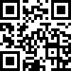

Muita vezes ao pensar em programação, imaginamos projetos que tem uma grande complexidade ou que terão uma utilidade muito pragmática. Mas programar também pode ser uma maneira de expressar pequenas ideias, experimentar e se divertir.
O principal objetivo desse projeto é promover através de um exercício simples que as pessoas experimentem, pratiquem e explorem as possibilidades de programar sem grandes compromissos.
Esta publicação compila resultados da proposta aberta realizada em 22 de dezembro de 2020 até março de 2024 para artistas, programadores, designers e quem tivesse interesse para executar o seguinte exercício:
Utilizando programação elaborar uma forma de visualizar uma contagem de 1 a 100.
Este projeto colaborativo foi uma iniciativa pessoal minha que contou com opiniões e contribuições de amigos e da comunidade Mastodon(te) e é uma expansão do projeto 10 formas de contar de 1 – 10 publicado pela norte em 20XX.
Um abraço a todos que toparam compartilhar seus códigos com esse projeto, obrigado e até a próxima.
Guilherme Vieira
Esta publicação foi impressa pela gráfica XXXXXX, a montagem e acabamento foi feita por Guilherme Vieira e Felipe Vieira na zona leste de São Paulo em XXXXXX de 2024.
Foram utilizadas as fontes XXXXX e XXXXXX.
Todas códigos e arquivos deste projetos estão disponíveis no site: 1-100.github.io/
Participantes: Advan Shumiski, Alexandre B A Villares, André Burnier, Caluã de Lacerda Pataca, César Ganimi Machado, Eduardo Zmievski (a.k.a. CurlyBoy), Felipe Turcheti, Fátima Finizola, Gabriela Momberg, Guilherme Vieira, Henrique Eira, John Cartan, João Generoso, Jéssica Breda, Júnior Morimoto, Lucas Gabriel Lima, Luiz Jales, Mandu, Mariana Leal, Marina Cardoso, Marlon Tenório, Mateus Berruezo, Monica Rizzolli, Rodrigo Junqueira, Thiago Correia, Tiago Fernandes Tavares, Vamoss, Vinícius Ladivez, Vitor Carvalho, Wandeson Ricardo (WSRicardo)